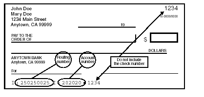

Standard E-File Pages
- There are eight standard pages in the E-file section, with a progress bar across the top. (One page, Bank Account, is visible only if needed.)
- Clicking “Continue” at the bottom of a page will save the information entered in that page.
- At any time, you can return to the main part of the return by clicking something in the left navigation bar, but if you do, anything entered since the last “Continue” was clicked won’t be saved.
Return Details page
Select how the federal and state returns will be filed (E-file or paper) and how the refund or payment will be handled (paper check, direct deposit, direct debit).
- “E-File: Mail Payment” includes any payment option other than direct debit from a bank account that is specified in the return. (Taxpayer options for paying an amount due are discussed in the Balance Due section on page 118.)
- [Workaround] If the taxpayer is neither getting a refund from nor owes money to the IRS, select “E-File: Mail Payment” if the return is to be filed electronically; otherwise select “Paper Return”.
- Note for CA state returns: If the taxpayer has a balance due and is going to pay this via a direct debit from a bank account, the printed return should (automatically) include a CA Form 8455, California e-file Payment Record for Individuals. When printed, check this form to make sure that it has a dollar amount on it; if not, enter that manually.
- Checking the “Only transmit the state return(s)” box will result in e-filing of only the state return - the federal return will not be transmitted to the IRS.
- This is typically used when the federal return has been accepted but the state return rejected. After making corrections, the state return can be electronically filed by checking this box and using the “Save and Transmit Return” button on the Submission Page, if having ERO capabilities.
- Note: This also can be used when the federal return has been rejected because of identity theft – often whoever committed the theft did not file a state return, or (possibly) filed the state return in another state. (E-filing the state return means that the taxpayer doesn’t have to paper file that return, and speeds up any refund.)
- Warning: if you are not the LC or ERO, do not check this box without prior approval.
- There is no reason to change the default PINs for Form 8879s.
- Optional questions (click if you want this to be visible):
- Third party designee information: This is only used when the taxpayer is designating someone who can speak to the IRS on their behalf.
- This is a very limited authorization, not a power of attorney, and the taxpayer must still sign the return or Form 8879 themselves.
- You or any other counselor or volunteer may never be a third-party designee.
- If an elderly taxpayer is accompanied by their adult child and the taxpayer seems to depend on the child for understanding interview questions, or if there are other issues, then the taxpayer might be asked if they would like to designate someone for this limited purpose.
- If they agree, they will have to provide a name, phone number, and PIN, which authorizes the named third party (for example, their adult child) to discuss the return with the IRS.
- Third Party Designee information will appear on Form 1040 (except amended returns) just above the signature line. An authorization expires one year from the due date of the tax return.
Fee Summary Page
- This page is not relevant to Tax-Aide – either skip it, or click “Continue” to go to the next page.
Bank Account Page
- Note: This page won’t show in the progress bar at the top of the E-file section, and won’t be accessible unless the Return Details page specifies a direct deposit or direct debit for the federal and/or state returns.
- On this page, the bank account information is normally taken from a check that the taxpayer has with them.
- Taxpayers who do not use checks should be encouraged to go to their bank to obtain a letter of account verification. The same information, from a website or mobile app, visible on the taxpayer’s mobile phone, is also acceptable.
- The taxpayer does not have to void the check; in fact, it does not even have to be removed from the taxpayer’s checkbook.
- It is not acceptable to have the taxpayer provide direct deposit information by calling a site or a counselor, because if an error is later discovered, it is impossible to prove who was at fault.
- If the taxpayer wants to use the account information from the prior year’s return, then it is acceptable to put the non-verified account information on the return, if the preparer does the following:
- Advises the taxpayer that without verification the account information put on the return is at their own risk, and if the funds do not arrive in their account that there will be no way to trace or replace the funds.
- Documents, in a note (page 8), that the taxpayer did not have a check or letter or account verification.
- Has the taxpayer write his or her initials next to the account information on the printed return. The initials will serve as indication that they have been warned that the account information has not been verified.
- Specifics:
- Entering a bank name is not required.
- Multiple bank accounts can be entered in TaxSlayer; in that case, multiple accounts will show on Form 8888, Allocation of Refund (Including Savings Bond Purchases).
- The state refund or payment (if done electronically) will use the first account listed. (In TaxSlayer, a state refund or payment can never be split between multiple accounts.)
- Use the “Pull Refund” button if the entire refund amount is to go into the first account that is entered (which for most returns will be the only account entered).
- For each bank account, enter the 9-digit Routing/Transit number (which is always on the left side of the MICR encoded line on checks) and the account number.
- Never use a deposit slip – the routing number for deposit slips is often different from the routing number for checks.
- Omit spaces, dashes, and special symbols.
- DO NOT enter the check (sequence) number, which will match the check number on the upper right corner of the check
- The check number may appear before the account number, though it normally follows the account number.

- The taxpayer can designate a portion of their federal refund to buy up to $5,000 in US Series I Savings Bonds. See instructions on page K-5 of Pub 4012; Pub 5381, Form 888 and Series I Bonds, has more info.
- Each amount requested must be a multiple of $50.
- The bonds can be issued in the name of both taxpayers, if this is a joint return, or in the name of just one spouse, or for others, and a co-owner or beneficiary can be designated.
- On the federal return, this information appears on Form 8888.
- Taxpayers will receive the bonds by mail.
- Taxpayers can contact Treasury Retail Securities at 1-800-245-2804 to check the status of their bonds.
- If there is a “Direct Debit Information” area, the “Requested Payment Date” field must be the IRS tax deadline or earlier. The phone number – required – is that of the taxpayer; it autofills from the phone number entered in the Basic Information section.
- Warning: TaxSlayer includes direct debit information for the federal return in a form – the Client Form Listing Summary – that is usually not printed and therefore not given to the taxpayer. To provide documentation for the direct debit, generate the Quality Review PDF and print only the page (usually page 3) which includes the direct debit information.
State ID License Page
- CA process note: Do not enter or select anything on this page; it isn’t required.
Taxpayer Consent Page
- There are three consent forms in the Intake Booklet, responses to which must be entered in TaxSlayer.
- If the taxpayer doesn’t consent, then s/he should NOT SIGN that particular consent form.
- After the tax preparer has confirmed that the taxpayer does not consent (as opposed to the taxpayer not understanding the consent form), the tax preparer should write “NO” or “DECLINE” on the consent form. This makes it clear to the quality reviewer that the taxpayer has not consented.
- For MFJ returns, both taxpayer and spouse must agree (sign) a given consent form for it to take effect.
- This means that if only one of the two is present during the preparation of the tax return, you or another counselor must see the signed consent form and enter that information in TaxSlayer, when the taxpayer or spouse returns with the Intake Booklet.
- Page 5 (not numbered) of the Intake Booklet is “How to Use this Intake Booklet”. It provides good summaries of the three consent forms. If the taxpayer has questions about a consent form, this page may provide them with answers.
- The three consent forms are:
- Consent to Disclose Tax Return Information to VITA/TCE Tax Preparation Sites (page 6) [Consent 1]
- If consent is given, Carryforward information from the current tax return will be available to any Tax-Aide or other TCE site, as well as any VITA site, when starting next year’s tax return. The full, filed tax return will remain accessible only at the site where it was prepared.
- If consent is not given, Carryforward information will be available only at the site where that tax return was prepared.
- Consent to Disclose/Use Information to AARP Foundation (page 7) [Consent 2]
- This consent allows a very limited number of AARP Foundation staff to create statistical reports from taxpayer information stored on TaxSlayer servers. The focus of the statistical reports is the diversity information on pages 3 and 4 of the Intake Booklet.
- Consent for AARP Foundation to use select tax return information to provide you with additional information about other free AARP Foundation programs or services (page 8) [Consent 3]
- Note: the taxpayer will not be contacted about anything other than free AARP services if s/he consents.
- If, for each of the three consent forms, the taxpayer has either signed (to consent) or the consent form is clearly marked as “No” or “Decline”, then you should enter this information in TaxSlayer without further discussion with the taxpayer.
- PINs and dates
- If the taxpayer declines a request for a consent, then you don’t need to enter a PIN or a consent date in TaxSlayer.
- PINs are arbitrary; entering the same digit five times is the fastest way to enter one. Don’t ask the taxpayer for a PIN.
- The fastest way to enter the date is to use the calendar. (The current date is highlighted.)
- For MFJ returns, entering a consent/authorization requires two PINs (they can be the same) and two dates.
Custom Questions Page
- This page has four types of questions:
- Questions 1 through 5 are specified by the IRS, a sponsor of the Tax-Aide program. The answers to the first four questions are on page 3 of the Intake Booklet (questions 8 through 11).
- The taxpayer has the absolute right to refuse to provide answers to these questions.
- For question 5, “Was the taxpayer physically present during the entire return preparation and quality review process?”, and the return is for a married couple, answer “Yes” even if only one spouse was present.
- IRS questions do not require tax preparers to make a choice for each question; if the taxpayer does not provide answers, those questions can be skipped.
- Questions starting with TA01 are specified by the AARP Foundation; this series of questions starts on page 4 of the Intake Booklet, but also pulls information from IRS questions on page 3. (The IRS is not legally able to share the responses to these questions, so the AARP Foundation must ask them separately.)
- For returns other than MFJ, spousal questions should be answered “No spouse” if that is an option; if it is not, no answer may be required.
- The taxpayer also has the absolute right to refuse to provide answers to these nine questions.
- Questions TA10 and TA11 are also specified by the AARP Foundation, but should be answered by the preparer, not by asking the taxpayer – the information is on the Bank Account page.
- Custom questions, set up at the district or site level.
- For example, a district might ask the identity of the quality reviewer for the return, with the answer selected from the initials (or first name and last initial) of the site’s counselors.
Custom Credits Page
- This page is not relevant to Tax-Aide – either skip it or click “Continue” to go to the next page.
Submission Page
- The final step in completing the E-file section is the Submission Page.
- Note: If you see a message at the top of the page, something like “You can’t e-file”, that means that you, the counselor, haven’t been given permission to transmit returns to the IRS. The return itself can be e-filed by someone who has ERO permission.
- Electronic signatures: Tax-Aide does not use these processes in TaxSlayer.
- Printing: If you’re the preparer, you normally wouldn’t print the return until it’s been quality reviewed.
- Sharing tax documents: The Customer Portal is for taxpayers who have uploaded their tax documents, and the return is being prepared virtually; no physical Tax-Aide site is involved.
- Return status tags: Select whatever return tag(s) are appropriate.
- Keep in mind that TaxSlayer treats the return tags as text, not as something that causes any action. For example, if you select the “OK to E-file” (or similar) tag, this does not put the return into the transmittal queue. Similarly, a tag like “Signature required” will not prevent a return from being e-filed.
- Tags are simply a way of communicating – to other counselors – what is going on with a return. They help LCs and EROs to sort and find specific returns on the Client Search page.
- More than one return tag can be selected, though normally only one is.
- “Signature Needed” (or similar) should be selected if this is a MFJ return with only one taxpayer present.
- The final actions of a preparer within TaxSlayer, prior to quality review:
- Click “Mark tax return ready for review” to change the status of the return on the Client Search (Office Client List) page to “Review Pending.” This puts the return in the “Return Reviews” section (accessible to all counselors whose security template includes review functionality).
- Click “Save and Exit Return.”
Created with the Personal Edition of HelpNDoc: Benefits of a Help Authoring Tool